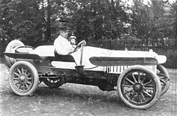

History of audi
Automobile company Wanderer was originally established in 1885, later becoming a branch of Audi AG. Another company, NSU, which also later merged into Audi, was founded during this time, and later supplied the chassis for Gottlieb Daimler's four-wheeler.[10] On 14 November 1899, August Horch (1868–1951) established the company A. Horch & Cie. in the Ehrenfeld district of Cologne. In 1902, he moved with his company to Reichenbach im Vogtland. On 10 May 1904, he founded the August Horch & Cie. Motorwagenwerke AG, a joint-stock company in Zwickau (State of Saxony). After troubles with the Horch chief financial officer, August Horch left Motorwagenwerke and founded in Zwickau on 16 July 1909, his second company, the August Horch Automobilwerke GmbH. His former partners sued him for trademark infringement. The German Reichsgericht (Supreme Court) in Leipzig,[11] eventually determined that the Horch brand belonged to his former company.[12] 1923 Audi Type E Since August Horch was prohibited from using horch as a trade name in his new car business, he called a meeting with close business friends, Paul and Franz Fikentscher from Zwickau. At the apartment of Franz Fikentscher, they discussed how to come up with a new name for the company. During this meeting, Franz's son was quietly studying Latin in a corner of the room. Several times he looked like he was on the verge of saying something but would just swallow his words and continue working, until he finally blurted out, "Father – audiatur et altera pars... wouldn't it be a good idea to call it audi instead of horch?".[13] Horch in German means 'hark' or 'hear', which is audi in the singular imperative form of audire—'to listen'—in Latin. The idea was enthusiastically accepted by everyone attending the meeting.[14] On 25 April 1910 the Audi Automobilwerke GmbH Zwickau (from 1915 on Audiwerke AG Zwickau) was entered in the company's register of Zwickau registration court. The first Audi automobile, the Audi Type A 10/22 hp (16 kW) Sport-Phaeton, was produced in the same year,[15] followed by the successor Type B 10/28PS in the same year.[16] Audi started with a 2,612 cc straight-four engine model Type A, followed by a 3,564 cc model, as well as 4,680 cc and 5,720 cc models. These cars were successful even in sporting events. The first six-cylinder model Type M, 4,655 cc appeared in 1924.[17] August Horch left the Audiwerke in 1920 for a high position at the ministry of transport, but he was still involved with Audi as a member of the board of trustees. In September 1921, Audi became the first German car manufacturer to present a production car, the Audi Type K, with left-handed drive.[18] Left-hand drive spread and established dominance during the 1920s because it provided a better view of oncoming traffic, making overtaking safer[18] when driving on the right.